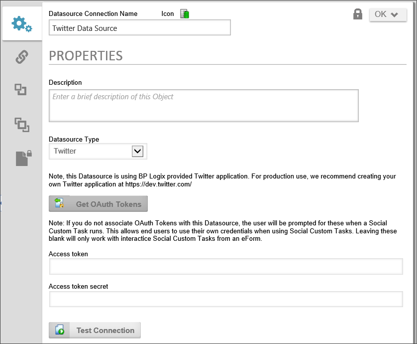

Process Director provides Datasources for both Twitter and Facebook. These social media Datasources allow you to use Process Director to extract information from social media accounts, or to post messages to them. Process Director already has the appropriate application access tokens built into the product, so you can immediately set up Datasources without having to create a Social Media app. You merely need to acquire the appropriate access tokens—a feature that is also built into the product. Note, these Datasources use BP Logix-provided social media applications. For production use, we recommend creating your own social media applications at the appropriate development web site for the social media platform.
Social Media applications generally use the OAuth authentication technology, which generally provides that you provide two pieces of information. You need an access token, and an access token secret.
In the Datasource configuration screen, select the appropriate social media Datasource type from the Datasource Type dropdown to display the configuration options for an OAuth-based Datasource like Facebook or Twitter.

If you don't yet have your own app created through the relevant developer's portal, you can click the Get OAuth Tokens button to obtain an authorization token using Process Director's built-in access token. If you already have an app, simply enter the Access token and Access token secret in the fields provided. Your app must not be in development mode, and must be publicly available before you can generate the appropriate OAuth Tokens.
You can click the Test Connection button to ensure the data connection is valid. Once you've validated the Datasource, click the OK button to close and save the Datasource.
You may now use this Datasource with the Social Media Custom Tasks.
There are some additional considerations to keep in mind:
OAuth tokens are site specific. They are only valid for the particular site you are requesting from. If you have OAuth tokens that were generated from a different site, they won't work if you put them into the Datasource configuration. They need to be generated from the IIS server where the Process Director system is installed. This requirement means that if you have separate development, staging, and/or production systems that are hosted on different IIS servers, you'll need to regenerate the OAuth tokens when you move the Datasource from the development to staging to production servers.
When you create a social media app, all of the social media sources that use OAuth for authentication provide you with an Access Token and Access Token Secret, though they all have slightly different names. To find the appropriate values to place in the Access Token and Access Token Secret for each of the different social media platforms, please refer to the list below. The list also includes the relevant developer portal for creating apps for the social media platform.
|
PLATFORM |
APP DEVELOPMENT URL |
ACCESS TOKEN |
ACCESS TOKEN SECRET |
|---|---|---|---|
|
|
https://apps.twitter.com/ |
Consumer Key (API Key) |
Consumer Secret (API Secret) |
|
|
https://www.linkedin.com/secure/developer |
API Key |
Secret Key |
|
|
https://developers.facebook.com |
App ID |
App Secret |
|
DropBox |
https://www.dropbox.com/developers |
App Key |
App Secret |
|
Microsoft OneDrive |
https://account.live.com/developers/applications |
Client ID |
Client Secret |
|
|
https://console.developers.google.com |
Client ID |
Client Secret |
|
box.net |
https://apps.app.box.com |
Consumer Key |
Consumer Secret |
To see more information about different Datasource Types and their configuration, please refer top the following topics: